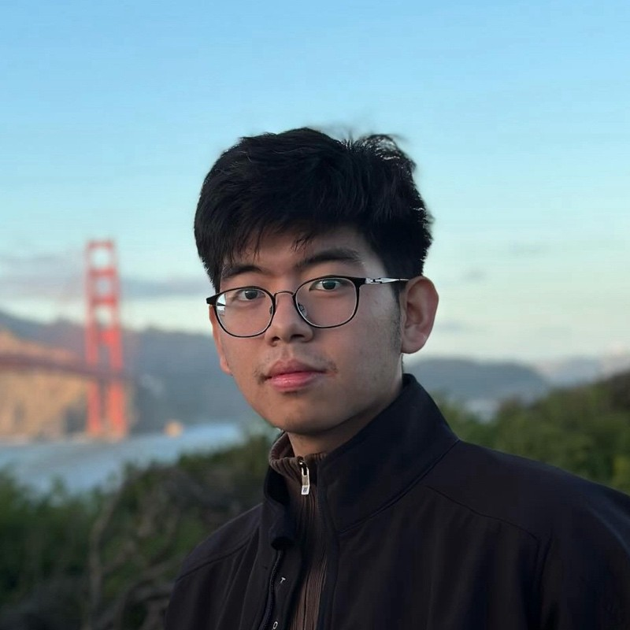

Embedded Systems
Firmware development for hardware-driven systems.
- Embedded C
- Bare-metal programming
- Sensor interfaces
- I²C · SPI · UART · GPIO
Embedded Systems • Firmware • PCB Design
I’m Thu Htet, a senior at UC Davis double majoring in Computer Engineering and Electrical Engineering. I build embedded systems, custom PCBs, firmware, and digital hardware projects.

Customizable modular control interface
🏆 2026 Outstanding Senior Design Award
View Project →About Me
I’m Thu Htet, a senior at UC Davis double majoring in Computer Engineering and Electrical Engineering. I enjoy building systems that connect physical hardware with reliable embedded software.
My work includes custom PCB design, embedded systems, hardware validation, embedded firmware, digital design, FPGA development, and robotics. I’m especially interested in designing, testing, and debugging real engineering products that bridge hardware and software.

Engineering Expertise
Firmware development for hardware-driven systems.
PCB development from schematic to board bring-up.
RTL design and simulation for digital hardware systems.
Debugging and validating hardware behavior with lab tools.
Featured Projects
Modular smart home control interface featuring custom PCBs, embedded firmware, I²C communication, and configurable peripheral modules.
View Project →

Developed embedded software, computer vision, and hardware integration for a 9-axis autonomous kitchen robot using Python, Teensy 4.1, OpenAI Vision API, and a customized Annin Robotics control interface.
View Project →
Designed and validated a 4S lithium-ion Battery Management System featuring protection, monitoring, balancing, and power distribution for CubeSat applications.
View Project →
Verilog-based matrix multiplication system using FSM control logic, datapath design, FPGA-oriented architecture, and ModelSim verification.
View Project →Engineering Milestones
Began pursuing Computer Engineering and Electrical Engineering with a focus on embedded systems, digital hardware, and PCB design.
Joined the Space & Satellite Systems Club to begin learning spacecraft electronics and PCB design. Shadowed senior members while learning schematic capture, PCB layout, component selection, datasheet interpretation, soldering, and hardware debugging for CubeSat systems.
Joined Assista Robotics to develop embedded and computer vision software for a 9-axis autonomous kitchen robot using Python, Teensy 4.1, OpenAI Vision API, and a customized Annin Robotics control interface.
Presented the robot at the 2025 UC Davis ECE Picnic Day Showcase, where it earned 1st Place after evaluation by Texas Instruments representatives.
Contributed to the design of a 4S lithium-ion CubeSat Battery Management System by developing schematics, PCB layouts, component selection, hardware assembly, debugging, and hardware validation as part of the Space & Satellite Systems Club.
Built an award-winning modular smart home control system integrating custom PCBs, embedded firmware, I²C communication, configurable peripheral modules, and a web-based configuration interface.
Pursuing opportunities in embedded systems, firmware development, PCB design, robotics, hardware validation, and digital design.